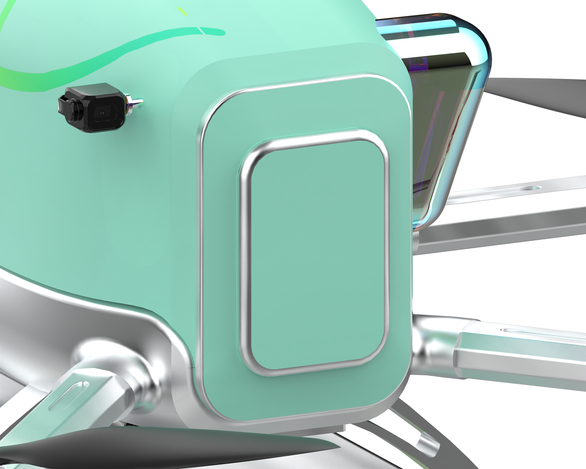
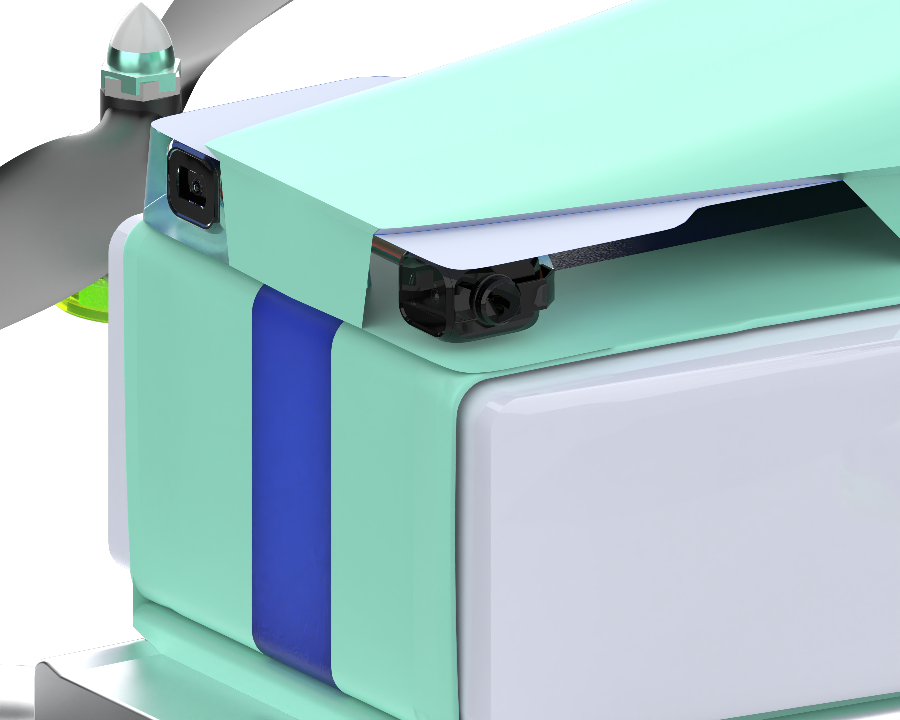
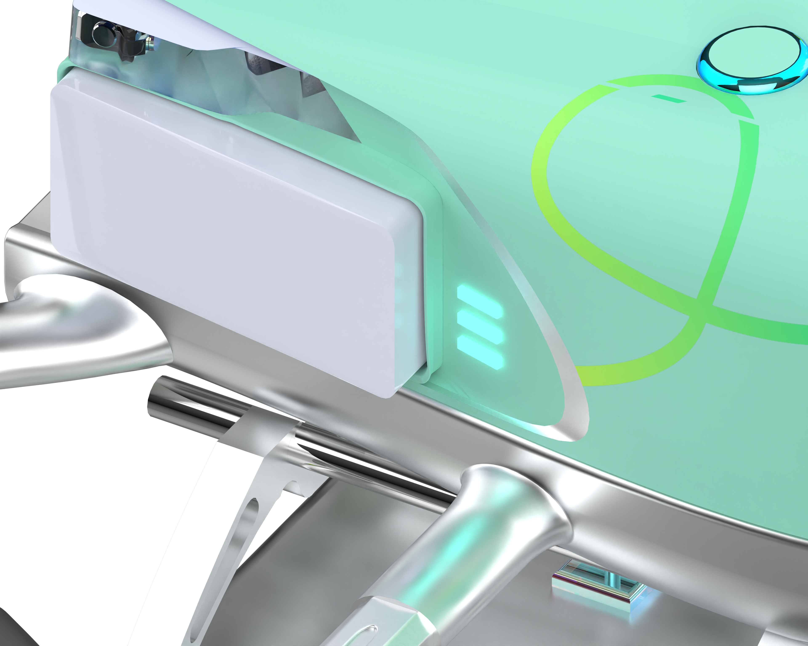
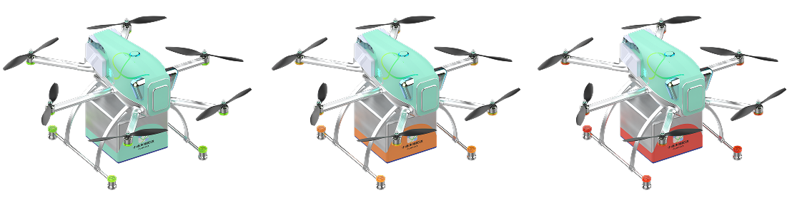
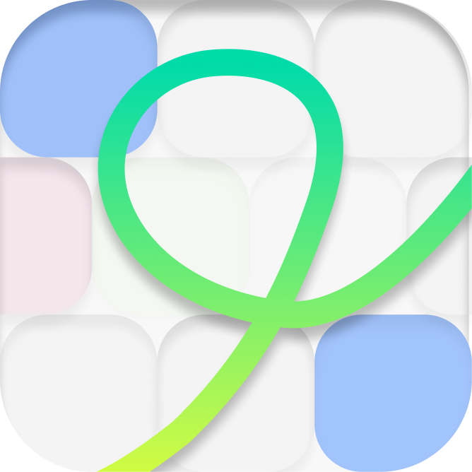
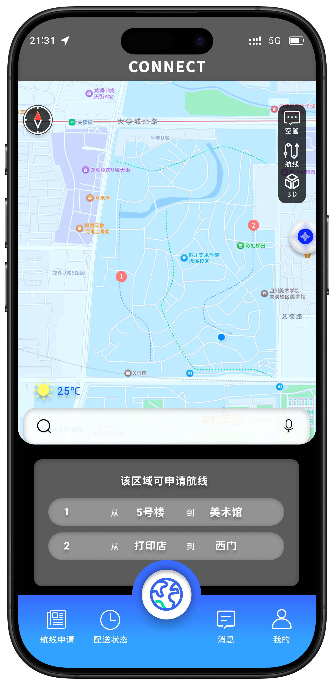
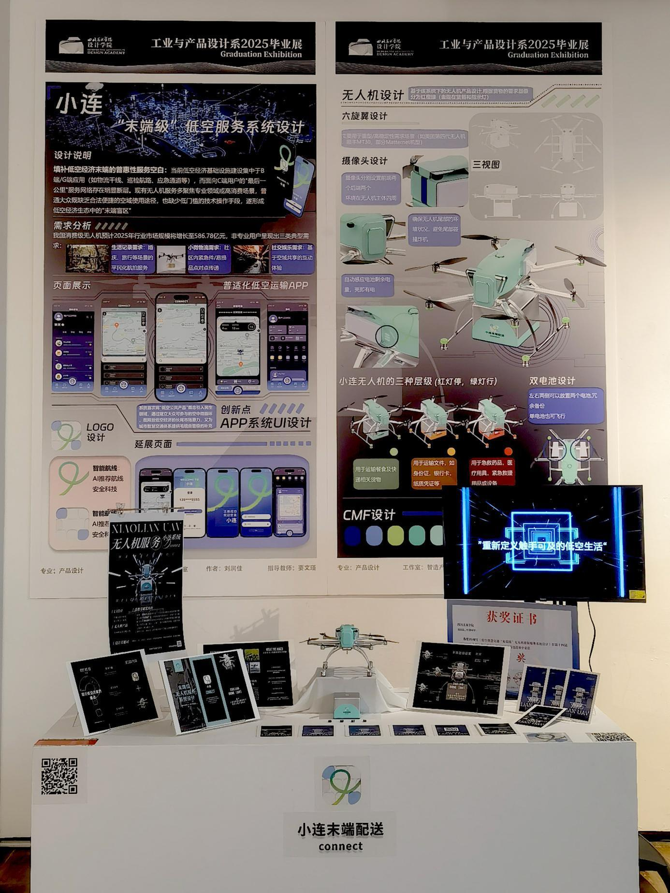

把低空交通的
“最后一公里”，
带入日常。
服务日常配送、重要文件与紧急医疗物品运输，用清晰的操作降低使用门槛。
LOW-ALTITUDE. EVERYDAY CONNECTIONS.
小连将空域信息、航线推荐和末端配送整合为一个普适化服务系统。让普通用户像使用日常出行软件一样，理解低空服务，并参与其中。
服务日常配送、重要文件与紧急医疗物品运输，用清晰的操作降低使用门槛。
回应飞行信息分散、可视化不足，以及普通用户缺少便捷服务入口的问题。
项目通过深圳低空相关场景的实地观察与从业人员访谈，梳理无人机运行、空域管理和信息流，并将需求整理为「飞行器—信息平台—监管端」三个层面。
关注物品是否到达、何时到达，以及当前配送是否需要自己处理。
把航线、天气、地面人流与无人机状态，组织成可读的信息。
通过空域态势和异常沟通入口，让服务中的不同角色协同。
依据原方案功能整理：从需求发起，到物品送达。
选择配送物品
确认起点与目的地
查看推荐路径
与环境信息
掌握剩余距离
预计时间与状态
通过告警与沟通
连接管理端
确认送达
收藏与分享航线
六旋翼结构 · 分级货箱 · 双电池设计
毕业展原片 · 动态结构展示
播放或拖动进度，观察机身与模块。
毕业展视频节选 · 拖动进度查看结构变化

把前方环境纳入视野，为飞行状态的感知与呈现提供支持。

围绕机身布置摄像头，关注尾部环境，补充飞行视野。

在机身两侧设置电池模块，通过灯光让电量状态直观可见。
通过货箱色彩与信号灯区分三种运输需求。颜色语义来自原方案，保留在产品呈现中。

早期灰度草稿围绕地图、常用入口和配送进度展开。最终界面延续这些核心模块，加入小连的品牌色、三维地图和无人机状态表达。

青绿到明黄的连续曲线，贯穿 App 图标、启动页与无人机机身，形成一致的品牌识别。
保留原始界面，以连续操作展示小连的移动端体验。点击界面可查看原图。
欢迎、注册与登录，让用户进入服务。
二维与三维地图建立空间认识，推荐航线辅助选择。
选择可用航线、货箱等级与配送时间，最后确认申请。

距离、时间、速度与环境信息，让配送过程可见。
消息、个人中心与路线分享，延续日常互动。
小连毕业展介绍视频 · 从移动端服务到无人机产品
将 App 的地图、航线和配送状态延展到桌面端。左侧组织任务，中间显示航线，右侧呈现配送详情，让信息在同一视野中建立联系。
打开交互演示 ↗新增 Web 概念方案 · 演示数据，不连接真实飞行服务
可切换任务、查看航线、筛选状态，体验从 App 到桌面端的信息重组。
蓝色带来明确的操作指引，
黑与白组织信息的层级。
案例与 Web 延展使用蓝黑配色；App 原稿和实体渲染保持你的原始设计。
小连最终形成服务系统、App 界面与无人机产品的一体化方案，并通过实体模型与毕业展呈现。设计的重点，是让人、信息与产品之间的关系更加清晰。

后续可通过任务测试，观察用户是否能找到路线、判断状态并理解异常提醒。
验证颜色与标识在不同距离、光照下的辨识度，并补充不依赖颜色的区分方式。
继续补充取消、重规划、人工介入和送达确认等服务环节。